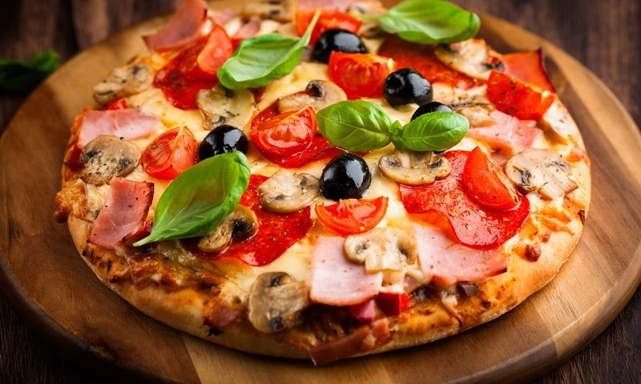
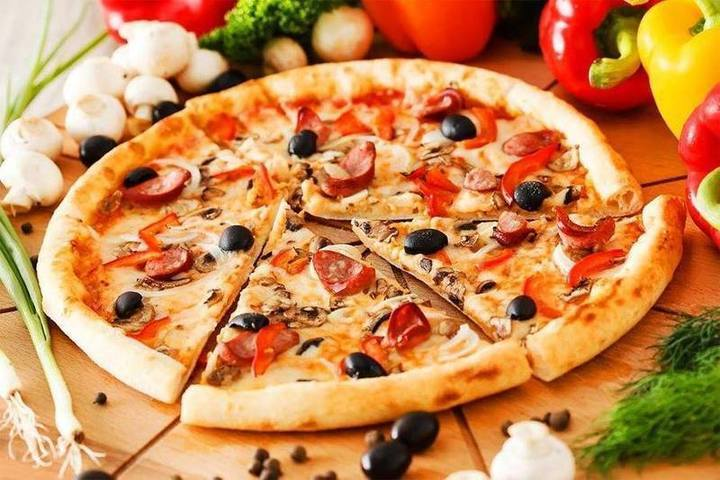
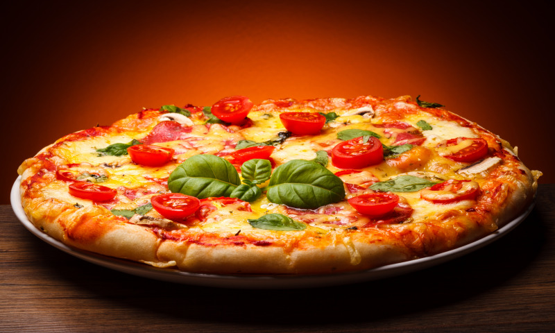
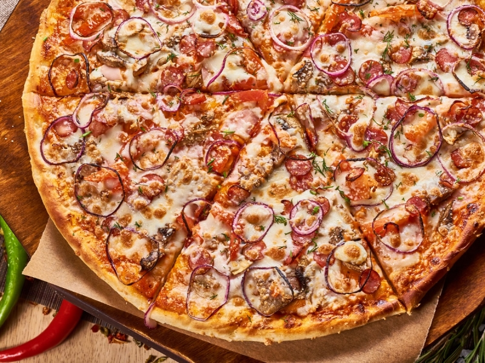

Феза

томатный соус – 100 г, сыр моцарелла – 50 г, помидоры черри – 50 г, маслины – 50 г, базилик, орегано, тимьян
Чеддер
1000 г муки твердых сортов, плюс немного на подпыл 5 г сахара 20 г свежих дрожжей 90 мл оливкового масла 500 мл воды, теплой 30 г соли 200 г сыра чеддер, тертого 100 г томат-пасты.
Овощная

мука, дрожжи, молоко, яйцо, соль, сахар, масло растительное, сладкий красный перец, помидоры, лук репчатый, баклажаны, зелень петрушки и укропа, чеснок, масло растительное, майонез, перец молотый черный, соль..
Лук и сыр
Тесто: мука, вода, молоко (не обязательно), дрожжи свежие, дрожжи сухие, соль; Начинка: лук крупный, колбаса, сосиски, масло растительное (для обжаривания), соус томатный, сыр тёртый, зелень, соль, перец.
